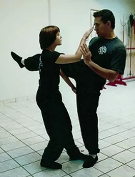

Deslocamentos
Por Thomas Pinheiro
A abordagem do deslocamento no treino de wing chun é um ponto fundamental, pois não basta obter força muscular nas pernas para chutar ou para manter-se em perfeito equilíbrio, a agilidade é indispensável. É preciso velocidade, força e estrutura somadas à sensibilidade, de forma que o indivíduo saiba utilizar mais precisamente os fatores necessários a determinado momento de aplicação. Decorar um movimento ajuda o desenvolvimento, mas são necessárias modificações no treino a fim de ganhar espontaneidade no corpo.
Não existe uma só solução para um ataque, e numa situação real de combate não existe padrão nas sequências de ataque e nem combinações determinadas para defesa. Dentro do sistema Wing Chun temos andadas básicas que procuram variação do movimento das pernas, e são classificadas pela distância de alcance que possuem. Há o passo que utiliza a postura do corpo no mesmo espaço, o deslocamento com 1/4 passo, o deslocamento com 1/2 de passo, o passo inteiro e o de 1 e ½.
O deslocamento é um ataque natural com as pernas, logo no primeiro contato com o adversário. A falta de velocidade, principalmente num espaço maior, acaba deixando o atacante vulnerável e os movimentos previsíveis. A dificuldade para aumentar a velocidade é manter a postura (o que exige mais peso na perna de trás). Regularmente, o equilíbrio é transferido para o meio do corpo, comprometendo o uso da perna dianteira, ou o peso na perna de trás é demais, inutilizando a perna da frente para entrada de joelho e expondo-a ao adversário.
O mestre Thomas Lo desenvolveu, a partir das andadas básicas de wing chun, onze combinações básicas para Siu Lim Tau, doze pertinentes ao Chum Kiu, e outras seis foram incorporadas ao treino de Bue Gee, com a colaboração do sifu Francisco Dias. Cada uma dessas sequências, além de treinar a velocidade, potência, estrutura, coordenação e respiração, desenvolve a aplicação real da técnica. Não contra apenas uma forma de ataque, mas para ataques que venham de sentidos variados e em número maior de adversários, sem estabelecer uma regra de defesa determinada para um ataque determinado.
Ou seja: Um movimento é utilizado contra diferentes movimentos. Cada uma das sequências, uma vez aprendida, possibilita o desenvolvimento de variantes e combinações, alternando características, passos e intenções entre cada uma das sequências. Desta forma o aluno progride não decorando, mas absorvendo e procurando realizar seus movimentos de forma espontânea. Essa progressão leva um certo tempo, pois com a evolução na movimentação, aumenta o número de forças obtidas num mesmo movimento: Deslocamento, foco, respiração, juntas, etc...
Para realizar tudo de forma natural, é preciso paciência, dedicação e muita correção. O Wing Chun tem em sua essência a luta corpo a corpo, grudado, porém não agarrado, com isto as pernas devem se mexer como um todo com os braços e o tronco. Mesmo colado ao adversário, a defesa e o ataque devem ser como a cobra que se esgueira pela presa, ou como a garça que sabe se embrenhar com precisão para atacar sua vítima.